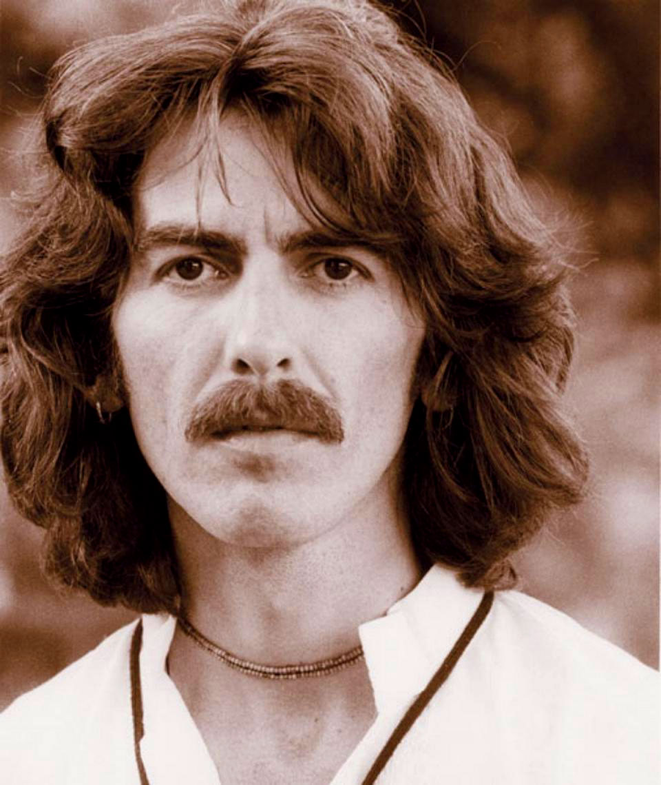

"A scuola con la mia banda mi divertivo a rubacchiare qualche mela, poi ci arrampicavamo sui sostegni esterni dei tram che passavano per Penny Lane e ci facevamo dei lunghi viaggi per le vie di Liverpool"
 Insieme a Lennon, una delle coppie di compositori di maggior successo e influenza di tutti i tempi, scrivendo alcune delle canzoni più amate nella storia della musica contemporanea.
Insieme a Lennon, una delle coppie di compositori di maggior successo e influenza di tutti i tempi, scrivendo alcune delle canzoni più amate nella storia della musica contemporanea.

A Paul bastò ascoltare alcuni accordi di chitarra suonati da George su un autobus sgangherato durante una gita scolastica. Paul, a sua volta, ne parlò immediatamente a John Lennon: è l'inizio della leggenda.